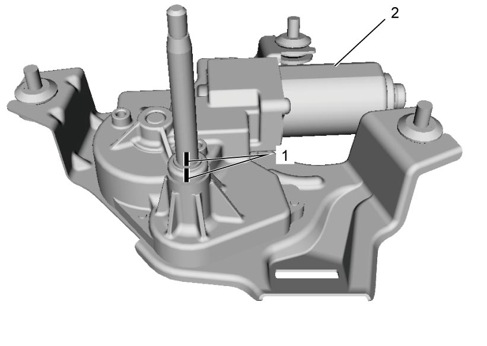
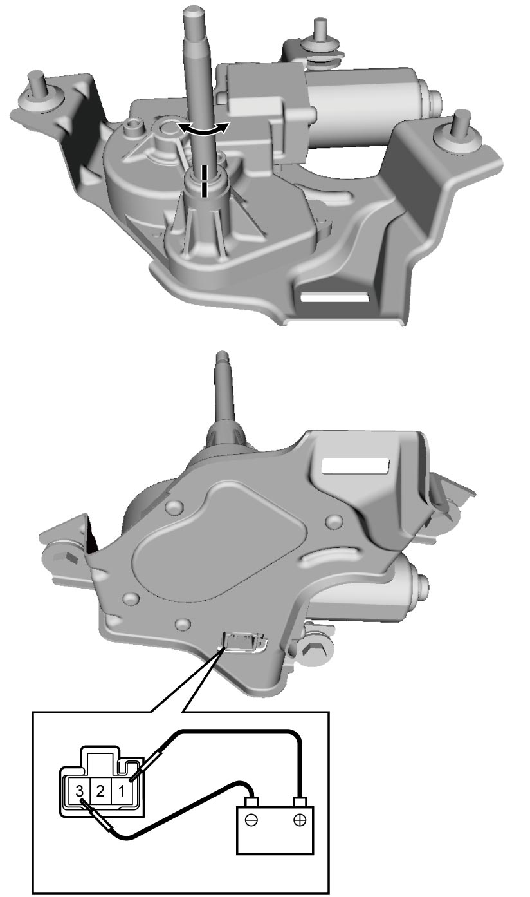

9D
| Rear Wiper Motor Inspection |
1)Make marks (1) as shown in figure with wiper motor (2) stopped.


 "Expand image")
2)Connect battery positive (+) and negative (–) terminals to wiper motor connector terminals as shown to operate motor at low speed. If wiper motor does not operate, replace wiper motor.

 "Expand image")
3)Connect battery positive (+) terminal to wiper motor connector terminal “1” and negative (–) terminal to wiper motor connector terminal “3” as shown to operate motor.
4)Disconnect terminal “3” from battery negative (–) terminal to stop wiper motor when marks (1) are not aligned.
5)Connect terminal “2” to battery negative (–) terminal.
Observe the wiper motor (2) turns once again and then stops at a specified position as shown.
Observe the wiper motor (2) turns once again and then stops at a specified position as shown.
 "Expand image")
6)Repeat Step 3) – 5) several times and check that the wiper motor stops at the specified position every time.
If check result is not as specified, replace wiper motor.
If check result is not as specified, replace wiper motor.